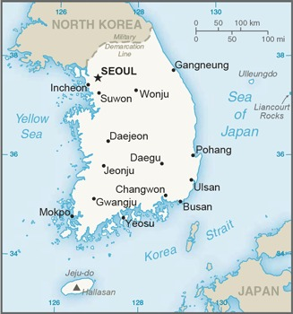

Genel Bilgiler
Güney Kore, Doğu Asya’da yer alan üniter bir cumhuriyettir. Başkenti Seul’dür. Yaklaşık 52 milyon nüfusa sahiptir. Resmî dili Korece’dir ve para birimi Güney Kore Wonu (KRW)’dur. Güney Kore, BM, G20 ve OECD üyesidir ve teknoloji, sanayi ve kültürel ihracat alanında küresel öneme sahiptir.
Güney Kore, kuzeyde Kuzey Kore ile kara sınırı paylaşır, doğuda Japon Denizi, batıda Sarı Deniz ve güneyde Kore Boğazı ile çevrilidir. Yüzölçümü yaklaşık 100.210 km²’dir. Ülke coğrafyası dağlık ve kıyı şeridi engebelidir. Önemli nehirleri Han, Nakdong ve Geum’dur.
Başkent: Seul
Kıta: Asya
Yüzölçümü: 100.210 km²
Nüfus (2025): 52.000.000
Bayrak Anlamı: Güney Kore bayrağı beyaz zemin üzerine siyah trigramlar ve ortada kırmızı-beyaz bir yin-yang sembolü içerir. Beyaz saflığı ve barışı, yin-yang evrensel dengeyi, trigramlar ise doğa ve evrensel prensipleri simgeler. Bayrak 1883 yılında kabul edilmiştir ve ülkenin ulusal sembolüdür.
Güney Kore Haritası
Ekonomi
Güney Kore ekonomisi yüksek gelirli ve gelişmiş bir yapıya sahiptir. Sanayi, teknoloji ve hizmet sektörleri ekonominin temelini oluşturur. Elektronik, otomotiv, gemi inşası ve kimya sektörleri öne çıkar. Tarım sektörü küçük ölçeklidir; pirinç ve sebze üretimi yaygındır. Ülke, teknoloji inovasyonu, Ar-Ge ve ihracat odaklı sanayi alanlarında dünya liderlerinden biridir.
| Yıl | İhracat (Milyar $) | İthalat (Milyar $) |
|---|---|---|
| 2019 | 605 | 490 |
| 2020 | 512 | 450 |
| 2021 | 635 | 572 |
| 2022 | 690 | 600 |
| 2023 | 700 | 620 |